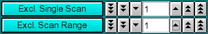

|
Manual
|
Parallel Cluster Control Module:

The parallel cluster control module is used to assemble all the information
necessary for a parallel computation on a Linux cluster or WAN computer grid.
The methods that support a parallel analysis include the global genetic algorithm
and 2-dimensional spectrum analysis. The following steps are involved for
starting a run on the parallel cluster:
- Load a velocity experiment
- select one or more experiments from the run to be included in the global analysis
- Repeat the above 2 steps until all experiments have been included for the global fit.
- assign the experimental parameters using either the
Genetic Algorithm Control or the 2-dimensional
Spectrum Analysis Control
- write the grid control file
- Start the run
You start the UltraScan cluster control by clicking on "Parallel Cluster Interface" in the Global Fit
sub-menu of the main menu.
Control Functions:
 |
Load Data: Load edited data sets (with the *.us.* suffix). A file dialogue will allow you to select a previously
edited and saved velocity experiment. If the data was edited with an
older version of UltraScan than is supported in the current version,
an error message will be displayed.
Run Details: View the diagnostic details
for a particular run.
Add Dataset: After loading a run, you need to select a cell and wavelength
for the fit.
Write Control File: Write out a control file for the parallel cluster.
It contains all the pertinent information for fitting with the selected method.
Help: This help file
Close: Close the control module window.
|
Run Information:
 |
Run ID: The name of the run given during editing
Temperature: The average temperature calculated from the entire run
Available Cells: The numbers the cells that contain analyzable data
Clicking on a cell and wavelength selection will bring up the cell contents
description for that cell and wavelength. Scroll through this list to bring
up information for cells > 3. If there is no data available for the selected
cell, the program will list "No Data available". Selecting a cell/wavelength
combination will automatically bring up the corresponding dataset. |
Analysis Controls:
 |
-
GA Control - Load the Genetic Algorithm control window to define
settings for a GA run.
- 2D-SA Control - Load the 2-dimensional Spectrum Analysis
controls to define the limits of a 2-dimensional Spectrum Analysis run.
-
Run Analysis: - Clicking on this buffon will start the parallel run.
-
Fit T-I noise Clicking on this button will cause the fitting
algorithm to extract time invariant noise components from the experimental
data and consider it in the fit.
-
Fit R-I noise Clicking on this button will cause the fitting
algorithm to extract radially invariant noise components from the experimental
data and consider it in the fit.
|
Data Controls:
|  |
- Exclude Single Scan: When setting this counter to a non-zero value,
the respective scan will be highlighted in red. Clicking on "Excl. Single
Scan" while a scan is highlighted in red will delete this scan from the
analysis. Deleting scans from the analysis is irreversible and can only
be reset by clicking on the "Reset" button or by reloading the data (when
smoothing, the data is always automatically reloaded, causing the number
of scans to be reset to the original count). Skipped scans
are excluded automatically. Scans that are selected for exclusion are also
marked with a vertical bar in the analysis plot, so you can
easily identify which scan is about to be deleted.
- Exclude Scan Range: Same as "Exclude Single Scan", except
for multiple scans. To use this feature, select first the start scan of
the range by using "Exclude Single Scan", then complete the scan
range by using "Exclude Scan Range". Please see the
van
Holde - Weischet analysis tutorial to decide which scans are appropriate
for analysis and which scans need to be excluded.
|

|
This dialog lists all selected data sets. Double-clicking on any dataset entry allows you to remove it
again from the list.
|
www contact: Borries Demeler
This document is part of the UltraScan Software Documentation
distribution.
Copyright © notice.
The latest version of this document can always be found at:
http://www.ultrascan.uthscsa.edu
Last modified on November 27, 2005.
{kind=link}
{kind=link}
{kind=link}
{kind=link}
{kind=link}
{kind=link}